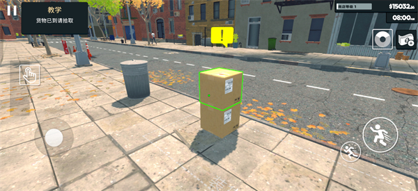
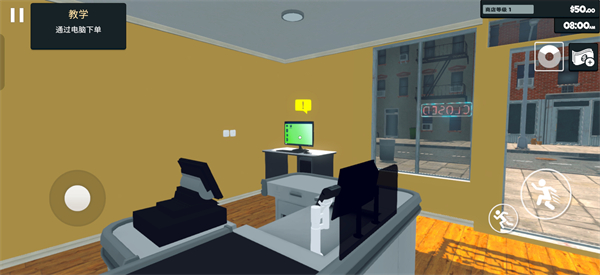

加班到凌晨三点，我在一间虚拟小超市里找回了秩序感
一个对着Excel熬到凌晨的上班族，点开朋友发来的超市模拟器，从一间空店、一笔启动资金开始，在货架和收银台之间找到了久违的掌控感。
加班到凌晨三点那晚，我盯着电脑屏幕上密密麻麻的单元格，感觉自己的脑子已经变成了一张被反复折叠的纸——再折一次就要裂开了。
同事小周在微信里发过来一个supermarket官网的链接："别盯着表格了，试试这个。我这两天每天打烊到后半夜，比加班还累，但就是停不下来。"
我本来以为又是那种割草刷怪的解压小游戏，点开一看，是一款模拟经营类的手游。超市模拟器。说实话第一反应是"又来"——模拟农场、模拟城市、模拟餐厅，这类游戏我手机里存过好几个，没一个撑过第三天。但那天晚上实在没力气刷短视频了，从官方下载了安装包，就当给手指找点事做。
首启：一间空店和一笔启动资金
第一次打开游戏，加载进度条慢悠悠地爬。我靠在椅背上等，心里还在想明天要改的那个数据透视表。进度条走完，画面跳出来——一间不大的店面，货架全是空的，门口挂着块"歇业"的牌子，角落里有一台电脑和一个空荡荡的收银台。屏幕上方显示了一串数字：那是我的启动资金。
就这些？没有炫酷的开场动画，没有Boss战预告片，就一间空房子和一点钱。
然后新手引导弹了出来。不是那种跳过即可的摆设，而是真的拉着我走完了开店的第一步：走到电脑前下单进货，到门口接送货的包裹，把纸箱搬进店里拆开，把里面的零食一袋袋摆上空货架，再给每个货架挂上对应的价签。最后一步是把门口的牌子翻过来，从"歇业"改成"营业中"。
我跟着引导走完，手上还没感觉到什么，直到第一声门铃响了——一个卡通顾客推门进来，在我刚摆好的货架前转了两圈，拿起一袋薯片走到收银台。我扫了商品，收了钱，那串启动资金后面多了一笔零头。
就是这声零钱进账的音效，让我忽然坐直了身子。

搬箱上架：原来整理货架可以这么治愈
接下来的两三天，我每天下班回家先开这个游戏。进货、搬箱、拆箱、上架、定价、收银——每一步都不难，但每一步都实实在在。
搬箱这个动作最开始觉得傻。对着门口的包裹点一下交互键，人就把箱子抱起来，走回店里，对着货架前方一点，箱子放下。然后再点一次，箱盖打开，里面的商品一排排露出来。拿起一袋饼干，对准货架上的空位，绿色高亮一闪，松手，饼干就稳稳地摆上去了。
有一次我凌晨两点多还在摆货架，把饮料区从左到右一格一格填满。摆完站起来伸了个懒腰，忽然发现自己在笑——现实里我租的那间小屋，书架上的书堆得乱七八糟，衣柜里的衣服叠了一半就忘了。但在这个游戏里，每一袋零食都有它该在的位置，每一格货架都被我塞得满满当当。
我后来才明白，吸引我的不是赚钱，是那种"把混乱整理成秩序"的过程。工作里的事情永远理不完，这个超市里的货架却总能被我摆整齐。摆完一排，你看得见成果，摸得着变化，没有上司在背后催，没有截止日期压着。
而且货架摆得好不好还真的影响生意。我试过把零食和饮料混着摆，顾客进来找半天，转两圈就走了。后来学乖了，饮料一片货架、零食一片货架、方便食品一片货架，顾客进来直奔目标，拿了就走，收银台的门铃响得勤快多了。

收银和算账：每天打烊后的那半小时
游戏里有营业时间。白天顾客一波接一波，我站在收银台前扫码、装袋、收钱，忙不过来的时候恨不得长出三只手。但一到入夜，客流就稀了下来，最后一个顾客推门走出去，店门口的牌子自动翻回"歇业"。
这时候我反而不着急关游戏。我会打开管理电脑，坐在那个像素风的小凳子上，一页一页翻当天的账。
哪些货架卖空了，哪些商品摆在那里动都没动——游戏里的仓储菜单能看得清清楚楚。卖空的说明好卖，明天要多订；滞销的说明要么定价高了，要么品类不对路，要么就是摆的位置不好。然后是定价总表，翻翻市场价有没有波动，自己的利润还剩多少。最后打开订货界面，给明天排货。
有一天晚上我复盘的时候发现，我订了一箱进口饼干，进价比市场价还高，摆上去三天了一份没卖出去。第二天我果断把价签改了，降到进价以下清货，半天就卖完了。虽然亏了点，但货架腾出来了，资金也回笼了。
这种决策带来的反馈是即时的。你做对了，货架空了、钱进来了；你做错了，库存压着、利润掉着。没有KPI，没有绩效评估，所有的答案都在游戏里明明白白地摆着。
扩张与执照：慢慢来的乐趣
攒了几天钱，商店模拟器开始露出它更深的玩法——执照怎么买、扩张先后顺序怎么排，这些进阶问题我去supermarket文档翻了一下才理清楚。管理电脑里有个执照页签，里面列着各种特殊品类的经营许可——烟酒类、生鲜类，每一项都标着价格。不是花钱就能买，你得先想清楚：买了执照，新品类摆在哪个片区？货架够不够？资金留不留得出进货的钱？客流接不接得住？
我第一次买执照的时候没多想，拿着刚攒的一笔钱就冲了烟酒执照。结果执照买了，货订了，摆上去才发现收银台已经排长队了，根本忙不过来。那天晚上打烊复盘，我对着管理电脑想了很久，最后打开招聘界面雇了第一个店员。
扩张也不是一蹴而就的。区域扩建要钱，雇人要钱，执照要钱。我试过一次把所有积蓄都砸进扩建，结果扩完了没钱进货，新空出来的货架全是摆设，顾客进来逛一圈什么都没买到就走了。后来学乖了，先让现有空间的每一格货架都动起来，资金攒够了再一步一步往外推。
这些道理说出来都懂，但在游戏里亲手踩一遍坑，感受就不一样。现实里没人会给我一个"重新开始"的按钮，但在这个超市里，我可以慢慢试、慢慢错、慢慢调。
到现在还在开的那家小店
写这篇文章的时候，我又打开了游戏。货架上摆得满满当当，收银台旁边站着我雇的两个店员，正在麻利地给顾客扫码装袋。店门口的牌子是亮着的"营业中"，门铃每隔十几秒就响一次。
小周前几天问我还在玩吗，我说在，现在每天打烊后还要花半小时算账。他笑我说这哪是解压，这是换了个地方加班。
但我知道不一样。加班是被表格和截止日期推着走，这里是我推着货架和收银台走。那些摆整齐的零食、算清楚的账目、从空店到满铺的变化——这些东西带来的满足感，是任何一个Excel公式都给不了我的。
这些开店的玩法和细节，我也整理了一份资料，GitHub、Gitee、GitCode 三个仓库都有同步，方便不同网络环境的朋友取用。
如果你也最近觉得脑子太乱、事情太杂，不妨试试找个这样的小游戏。不用复杂，不用宏大，就一间小店，一点启动资金，从整理货架开始。也许你会在那个像素风的小超市里，找回一点久违的、属于自己的秩序感。